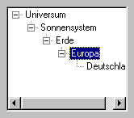

Hilfe
SelectedTreeViewNode

Aufruf
Parameter
Rückgabewert
Beschreibung
Beispiel
Siehe auch
zweig = SelectedTreeViewNode (treeview)
Parameter
| treeview | Identität von Treeview-Objekt |
Rückgabewert
Identität des ausgewählten Zweiges wird zurückgeliefert. Wenn 0 zurückgeliefert wird, dann ist kein Eintrag ausgewählt.
Beschreibung
Die Funktion SelectedTreeViewNode ermittelt ausgewählten Zweig eines Treeview-Objekts. Dies ist meistens nach einem Event nützlich. Mit SelectTreeViewNode kann ein Zweig manuell ausgewählt werden.
kann ein Zweig manuell ausgewählt werden.
Wenn kein Zweig ausgewählt ist, dann wird 0 zurückgeliefert - ansonsten wird die Identität des ausgewählten Zweiges zurückgeliefert.

Beispiel
Standardbeispiel:
window = CreateWindow("Window", 50, 50, 300, 300, 0, 3)
windoww = ClientWidth(window)
windowh = ClientHeight(window)
treeview = CreateTreeView(5, 5, windoww - 10, windowh - 10, window)
SetGadgetLayout treeview, 1, 1, 1, 1
node1 = AddTreeViewNode("Universum", TreeViewRoot(treeview))
node2 = AddTreeViewNode("Sonnensystem", node1)
node3 = AddTreeViewNode("Erde", node2)
node4 = AddTreeViewNode("Europa", node3)
node5 = AddTreeViewNode("Deutschland", node4)
Repeat
If GetKey() = 27 Then End
Select WaitEvent()
Case $401
If EventSource() = treeview Then
selected = SelectedTreeViewNode(treeview)
If selected = node1 Then Notify "Universum"
If selected = node2 Then Notify "Sonnensystem"
If selected = node3 Then Notify "Erde"
If selected = node4 Then Notify "Europa"
If selected = node5 Then Notify "Deutschland"
EndIf
Case $803 : End
End Select
Forever
windoww = ClientWidth(window)
windowh = ClientHeight(window)
treeview = CreateTreeView(5, 5, windoww - 10, windowh - 10, window)
SetGadgetLayout treeview, 1, 1, 1, 1
node1 = AddTreeViewNode("Universum", TreeViewRoot(treeview))
node2 = AddTreeViewNode("Sonnensystem", node1)
node3 = AddTreeViewNode("Erde", node2)
node4 = AddTreeViewNode("Europa", node3)
node5 = AddTreeViewNode("Deutschland", node4)
Repeat
If GetKey() = 27 Then End
Select WaitEvent()
Case $401
If EventSource() = treeview Then
selected = SelectedTreeViewNode(treeview)
If selected = node1 Then Notify "Universum"
If selected = node2 Then Notify "Sonnensystem"
If selected = node3 Then Notify "Erde"
If selected = node4 Then Notify "Europa"
If selected = node5 Then Notify "Deutschland"
EndIf
Case $803 : End
End Select
Forever
Siehe auch
TreeViewRoot, CollapseTreeViewNode, CountTreeViewNodes, AddTreeViewNode, CreateTreeView, ExpandTreeViewNode, FreeTreeViewNode, InsertTreeViewNode, SelectTreeViewNode, ModifyTreeViewNode